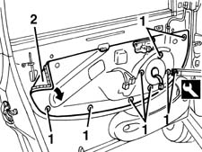
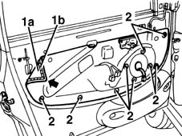

7005A04 front side door water guard protection - r r or replace with door panel removed
- Path
- Procedures > 70 FITTINGS > 7005 PASSENGER COMPARTMENT FRONT SIDE DOORS > 7005A front side door assembly > 7005A04 front side door water guard protection - r r or replace with door panel removed
- Kind
- repair procedure (removal / refitting; the operation number is the code)
- Applies to
- all engines; all production periods
- Interactive page
- https://sloeber94.github.io/elrnDB-fMltpl/en/#/2892006
Applies to: all engines; all production periods
 Removing
Removing
 Refitting
Refitting1. Disengage the retainers using the special tool.
 | Name | Country |
|---|---|---|
1 | Scraper blade | 1.878.077.000 |
2. Remove the protective water seal.

Applies to: all engines; all production periods
Refitting
RemovingCheck that the new seal is intact and not torn.
1. Fit the new seal (1a).
2. Engage the retainers.

Topics that link to this page (23)
- 5505B11 front door wiring - r r
- 7005A05 front side door water guard protection r r or arrange
- 7005A28 front side door limiter- repair or replace
- 7005C11 front side door outside handle r r
- 7005C34 front side door lock barrel - r r with door panel removed
- 7005C35 barrel for front side door lock - r+r
- 7005C42 front side door barrel/lock connecting linkage - r r with door panel removed
- 7005C43 link connecting front side door barrels/catch - r+r
- 7005C50 front side door interior opening mechnism r-r for repair or replacement with door panel removed
- 7005C51 front side door inner catch device - r+r for repair or replacement
- 7005C66 front side door safety catch link r r with door panel removed
- 7005C67 front side door safety catch link r r
- 7005D14 front side door descending window glass - r r with door panel (and mount frame) removed
- 7005D15 front side door descending window glass r r
- 7005D18 front side door descending window glass channel r r
- 7005D22 front side door descending window glass guide (one) - r r with door panel (and support frame) removed
- 7005D23 front side door descending window glass guide one r r
- 7005M20 front side door electric window system - r r with door panel/support frame removed
- 7005M21 front side door electrically operated window - r r
- 7005M24 mechanism of front side door electric window system - check position and fastening with door panel removed
- 7005M25 front side door electrically operated window mechanism chech position and fastening
- 7005N20 front side door lock motor/catch assembly - rr with door panel and support frame removed
- 7005N21 front side door lock motor-lock assembley-r r